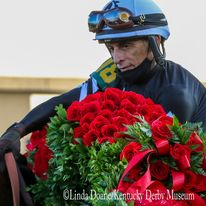
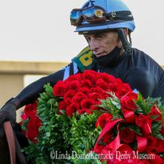

Thoroughbred Ownership Consulting
Congratulations on choosing Thoroughbred ownership
Whether you are investing in the Thoroughbred industry for gains, passion or lifestyle it can be intimidating, but not impossible. We are here to guide you along the way. The termology is different. Understanding vet bills. Absentee ownership does not have to be "out of sight, Out of mind." These are a ll challeging aspects. How we can help you overcome these challenges allowing horse ownership to be a transparent, cohesive and enjoyable experience.